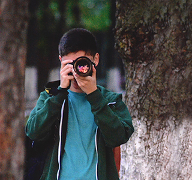
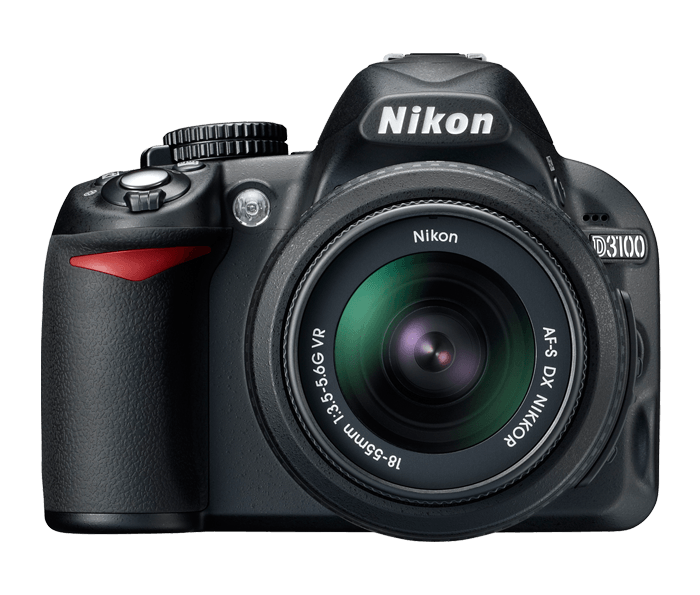

Date tehnice
Ce "aparatură"" am?
- Nikon D3100
- Nikon 18-55mm f/3.5-5.6G VR II AF-S DX
- Tamron AF-S 70-300mm f/4-5.6 Di LD Macro
- Nikon AF-S NIKKOR 50mm f/1.8G
- Fancier WT3530
- Nissin Digital Speedlite Di-466
- Lexar SDHC 32Gb 200x
- Nikon Coolpix L21, Gri

Design compact și usor
Cu doar 505g, aparatul foto dSLR Nikon D3100 compact este pregtit oricând.
Rafală cu 3 cadre pe secundă
Ideal pentru captarea mișcărilor rapide, dinamice și expresilor faciale.
Filmare Full HD 1080p
Ofera cu culori vii, contrast frapant si detalii clare, acestea fiind înspțite și de sunet.

Selector automat al scenei
Selectează automat modul Scenă, care se potrivește situației și subiectului dumneavoastră.
Detalii excepționale
Numărul mare de pixeli al senzorului aparatului oferă o claritate izbitoare.
Imagini cu iluminare scăzută
Cu o valoare ISO maximă de 3200 puteți fotografia cu timpi scurți de expunere.
Ce cărți am citit?
- Fotografia de portret. 99 de idei pentru tine, familie și prieteni - Annabel Williams
- Ochiul Fotografului - Michael Freeman
- Manual de Fotografie Digitală - Michael Freeman
- 101 ponturi de bază în fotografia digitală - Michael Freeman
- Fotografiază-ți familia: copiii, prietenii și animalele de companie - Joel Sartore, John Healey
- Fotografia de Natură pe Înțelesul Tuturor - CHIP KOMPAKT
- Fotografia alb-negru pe Înțelesul Tuturor - CHIP KOMPAKT
- Portretul Perfect: Creativitate în editarea foto - CHIP KOMPAKT
Tehnici folosite..?
Toate metodele de fotografiere folosite de mine, cât și multe altele le găsiți în cărțile recomandate mai sus!
Pentru editare folosesc Adobe Photoshop CC 2017.